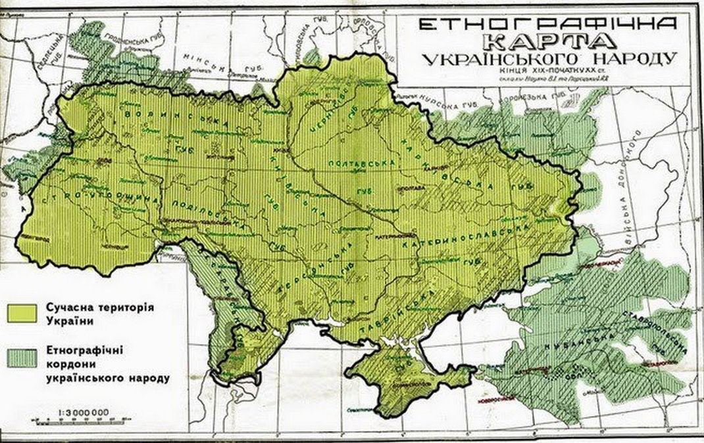
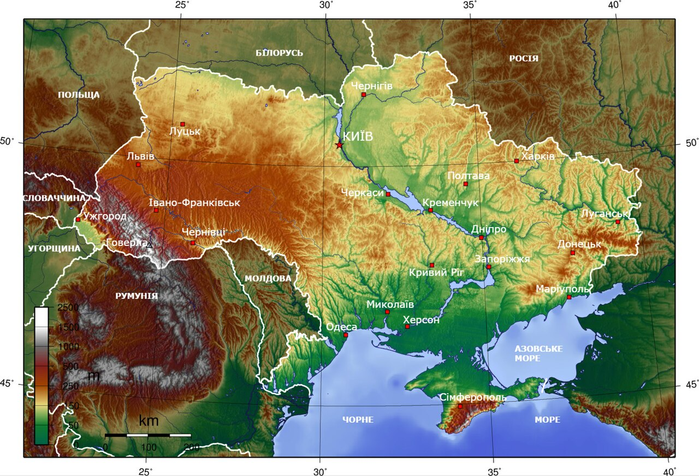

Ukraine
Украї́на — держава у Східній та частково Центральній Європі. Охоплює південний захід Східноєвропейської рівнини, частину Східних Карпат і Кримські гори. Межує з Румунією й Молдовою на південному заході, з Угорщиною, Словаччиною та Польщею на заході, з Білоруссю на півночі та з Росією на сході й північному сході. На півдні омивається Чорним та Азовським морями. Площа становить 603 700 км²[7]. Найбільша за площею країна серед повністю розташованих у Європі.
Назва
Україна має декілька історичних назв, що є частково або повністю тотожними. Сучасна Україна розташована на землях, що у перших століттях нашої ери були відомі здебільшого як «Скіфія» та «Сарматія», однак це назва, завіксована у творах іноземних авторів, а етнічна і культурна ідентичність тогочасного населення цих земель переважно не досліджена[25]. Найвідомішими історичними назвами, що стосувалися сукупності земель, на яких відбувався етногенез українського народу та мала місце відносна тяглість його державності[25], були: «Русь», «Росія» («Ρωσία», «Rosia», «Russia»), «Рутенія» («Ruthenia»), «Роксоланія» («Roxolania»)[26], «Україна»[27], «Малоросія», «Військо Запорозьке», «Гетьманщина».
Русь
Найдавніша відома згадка слова «Русь» як географічної назви є у візантійсько-руському договорі 911 року, де вона використана на позначення держави і території підвладної київському князю Олегу (що на той час обмежувалося переважно околицями Києва)[28][29]. Надалі назва «Русь» використовувалася на позначення земель, на які поширювалася влада київських князів, у вузькому значенні лише щодо Середнього Придніпров'я (Київське, Чернігівське, Переяславське князівства), у ширшому — на значну частину Східної Європи, при цьому землі за межами Наддніпрянщини в низці джерел означалися як «Зовнішня Русь»[28][29]. Одночасно у Візантії на означення Русі використовувалося, серед інших назв, еллінізоване слово «Росія» («Ρωσία»)[28][30].
Україна
Слов'янське слово «Україна» вперше згадується в Київському літописному зводі за Іпатіївським списком під 1187 роком[38]. Ним окреслювали терени Переяславського князівства, що входило до історичного ядра Русі поруч із Київським і Чернігівським князівствами. Це слово також зустрічається в руських літописах під 1189, 1213, 1280 і 1282 роками[38], позначаючи Галичину, Західну Волинь, Холмщину й Підляшшя. У литовських і польських хроніках та офіційних документах XIV—XVII століття «Україною» в широкому значенні називали руські землі Галичини, Волині, Київщини, Поділля й Брацлавщини, а у вузькому — територію Середнього Подніпров'я[39]. Таке ж двояке значення цього слова зберігалося й із середини XVII століття, після постання руської держави Війська Запорозького[40].
Географія та природа
Розташування

Україна розташована в південно-східній частині Європи[7]. Вона має спільні сухопутні державні кордони з Білоруссю на півночі, з Польщею на заході, зі Словаччиною, Угорщиною, Румунією і Молдовою на південному заході й із Росією на сході. Південь України омивається Чорним та Азовським морями. Морські кордони вона має з Румунією і Росією.
Загальна площа України становить 603 700 км², вона становить 5,7 % території Європи й 0,44 % території світу. За цим показником вона є другою за величиною серед країн Європи після Росії (або найбільшою країною, яка повністю лежить у Європі). Площа виключної морської економічної зони України становить 72 658 км². Територія України витягнута із заходу на схід на 1316 км і з півночі на південь на 893 км, лежить приблизно між 52° 20′ та 44° 23′ північної широти й 22° 5′ і 41° 15′ східної довготи.
- Крайній північний пункт — село Грем'яч (ур. Петрівське) Чернігівської області.
- Крайній південний пункт — с-ще Форос Автономної Республіки Крим.
- Крайній західний пункт — село Соломоново Закарпатської області.
- Крайній східний пункт — село Рання Зоря Луганської області.
- Географічний центр України розташований на північній околиці села Мар'янівка Звенигородського району Черкаської області[43].
- Згідно з однією з методик вимірювання[44], географічний центр Європи розташований на території України, неподалік міста Рахів Закарпатської області.